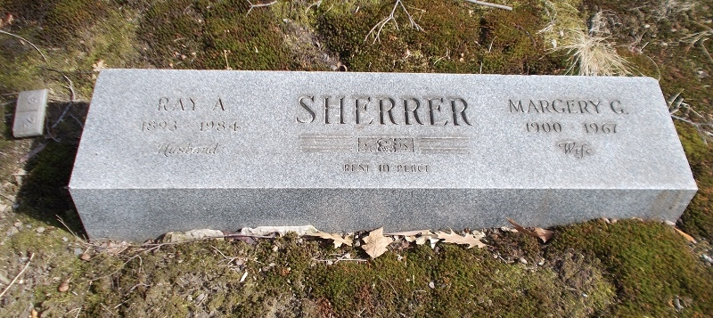

Margery Gwynne Sherrer (née Leader) cMay 1900 - 1967
[ Home ] | [ Calendar ] | [ Surnames Index ] | [ Census Index ] | [ Family History ]The child of Thomas Leader (a carpenter building) and Adelaide Pointer (a dressmaker), Margery Leader, the second cousin twice-removed on the father's side of Nigel Horne, was born in Newington, London, England c. May 19001,2,3. She married Ray Sherrer (with whom she had 1 surviving child, Rae M) in Cuyahoga, Ohio, USA in 19234.
During her life, she was living at Lots Road, Chelsea, London, England on Mar 31, 19011; and in Euclid City, Ohio on Apr 1, 19405. On Mar 11, 1907 she arrived in New York, New York, USA. She traveled from Southampton, Hampshire, England in 1907.
She died on Jan 1, 1967 in Cleveland, Ohio and was buried there at Lake View Cemetery after Jan 1, 1967.
Parents
- Thomas was born c. 1875
- Adelaide Agnes Esther was born c. May 1876
Citations
- 1901 England, Wales & Scotland Census - Findmypast (was age 0 and the daughter of the head of the household)
- England & Wales births 1837-2006 - Findmypast
- Ohio Deaths, 1959-2012 - Findmypast
- United States Marriages - Findmypast
- US Census 1940 - Findmypast (was age 38 and the wife of the head of the household)
Media
Margery Leader - Ray Sherrer - headstone

1901 England, Wales & Scotland Census - GBC/1901/0001323688
England & Wales births 1837-2006 - BMD/B/1900/2/AZ/000363/035
Ohio Deaths, 1959-2012 - US/BMD/OHIO_DEATHS/1321752
United States Marriages - US/FS/M/019731834/2
US Census 1940 - USC/1940/1600245783
Family Tree

Generated by ged2site. Last updated on Jun 11, 2024